18 Git and GitHub
If you’re serious about software development, you need to learn about Git. Git is a version control system, a tool that tracks changes to your code and shares those changes with others. Git is most useful when combined with GitHub, a website that allows you to share your code with the world, solicit improvements via pull requests and track issues. Git + GitHub is the most popular version control system for developers of R packages (witness the thousands of R packages hosted on GitHub).
Git and GitHub are generally useful for all software development and data analysis, not just R packages. I’ve included it here, because it is so useful when you’re making a package. There’s no way I could be as productive without Git and GitHub at my back, enabling me to rapidly spot mistakes and easily collaborate with others.
Why use Git + GitHub?
-
It makes sharing your package easy. Any R user can install your package with just two lines of code:
install.packages("devtools") devtools::install_github("username/packagename") GitHub is a great way to make a barebones website for your package. Readers can easily browse code, and read documentation (via Markdown). They can report bugs, suggest new features with GitHub issues, and propose improvements to your code with pull requests.
Have your ever tried to collaboratively write code with someone by sending files back and forth via email or a Dropbox folder? It takes a lot of effort just to make sure that the two of you aren’t working on the same file and overwriting each others’ changes. With Git, both of you can work on the same file at the same time. Git will either combine your changes automatically, or it will show you all the ambiguities and conflicts.
Have you ever accidentally pressed
sinstead of Cmd + S to save your file? It’s very easy to accidentally introduce a mistake that takes a few minutes to track down. Git makes this problem easy to spot because it allows you to see exactly what’s changed and undo any mistakes.
You can do many of these same things with other tools (like subversion or mercurial) and other websites (like gitlab and bitbucket). Git is most useful in conjunction with GitHub, and vice versa, so I’ll make no effort to distinguish between features that belong to Git and those that belong to GitHub. But I think Git + GitHub is the most user-friendly system (especially for new developers), not least because its popularity means that the answer or solution to every possible question or problem can be found on StackOverflow.
This is not to say that Git is easy to learn. Your initial experiences with Git are likely to be frustrating and you will frequently curse at the strange terminology and unhelpful error messages. Fortunately, there are many tutorials available online, and while they aren’t always well written (many provide a lot of information but little guidance about what to do with it or why you need to care), you can absolutely master Git with a little practice. Don’t give up! Persevere and you’ll unlock the super-power of code collaboration.
18.1 RStudio, Git and GitHub
RStudio makes day-to-day use of Git simpler. Once you’ve set up a project to use Git, you’ll see a new pane and toolbar icon. These provide shortcuts to the most commonly used Git commands. However, because only a handful of the 150+ Git commands are available in RStudio, you also need to be familiar with using Git from the shell (aka the command line or the console). It’s also useful to be familiar with using Git in a shell because if you get stuck you’ll need to search for a solution with the Git command names.
The easiest way to get to a shell from RStudio is Tools > Shell. This will open a new shell located in the root directory of your project. (NB: on Windows, this opens up a bash shell, the standard Linux shell, which behaves a little differently from the usual cmd.exe shell.)
Don’t worry if you’ve never used the shell before because it’s very similar to using R. The main difference is that instead of functions, you call commands, which have a slightly different syntax. For example, in R you might write f(x, y = 1), where in the shell you’d write f x --y=1 or f x -y1. Also, while shell commands are even less regular than R functions, you fortunately only need to be familiar with a few. In this chapter, you won’t be doing much in the shell apart from running Git commands. However, it’s a good idea to learn the three most important shell commands:
-
pwd: print working directory. This tells you which directory you’re currently in. -
cd <name>: change directory. Usecd ..to move up the directory hierarchy. -
ls: list files. Shows all files in the current directory.
If you’ve never used the shell before, I recommend playing Terminus. It’s a fun way to learn the basics of the shell. I also recommend taking a look at Philip Guo’s Basic Unix-like command line tutorial videos, and at http://www.ee.surrey.ac.uk/Teaching/Unix/unix1.html and https://p1k3.com/userland-book/.
18.2 Initial set up
If you’ve never used Git or GitHub before, start by installing Git and creating a GitHub account. Then, link the two together:
-
Install Git:
- Windows: https://git-scm.com/download/win.
- OS X: https://git-scm.com/download/mac.
- Debian/Ubuntu:
sudo apt-get install git-core. - Other Linux distros: https://git-scm.com/download/linux.
-
Tell Git your name and email address. These are used to label each commit so that when you start collaborating with others, it’s clear who made each change. In the shell, run:
(You can check if you’re set up correctly by running
git config --global --list.) Create an account on GitHub, https://github.com (the free plan is fine). Use the same email address as above.
-
If needed, generate a SSH key. SSH keys allow you to securely communicate with websites without a password. There are two parts to an SSH key: one public, one private. People with your public key can securely encrypt data that can only be read by someone with your private key.
From R, you can check if you already have an SSH key-pair by running:
file.exists("~/.ssh/id_rsa.pub")If that returns
FALSE, you’ll need to create a new key. You can either follow the instructions on GitHub or use RStudio. Go to RStudio’s global options, choose the Git/SVN panel, and click “Create RSA key…”:
Give GitHub your SSH public key: https://github.com/settings/ssh. The easiest way to find the key is to click “View public key” in RStudio’s Git/SVN preferences pane.
18.3 Create a local Git repository
Now that you have installed and configured Git, you can use it! To use GitHub with your package, you’ll need to initialise a local repository, or repo for short. This creates a .git directory that stores configuration files and a database that records changes to your code. A new repo exists only on your computer; you’ll learn how to share it with others shortly.
To create a new repo:
-
In RStudio, go to project options, then to the Git/SVN panel. Change the “Version control system” from “None” to “Git”:
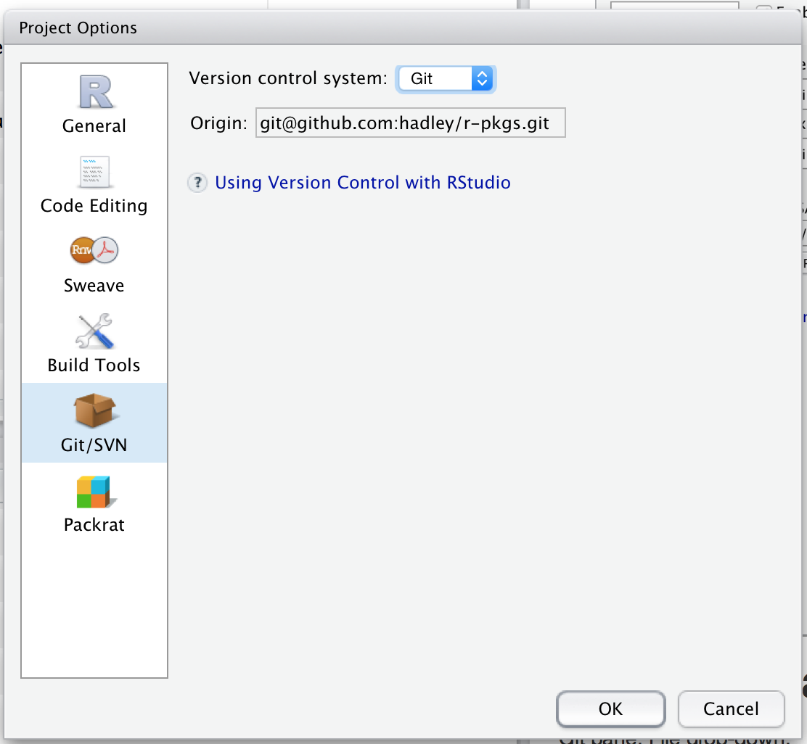You’ll then be prompted to restart RStudio.
In a shell, run
git init. Restart RStudio and reopen your package.
Once Git has been initialised, you’ll see two new components:
-
The git pane, at the top-right, shows you what files have changed and includes buttons for the most important Git commands:
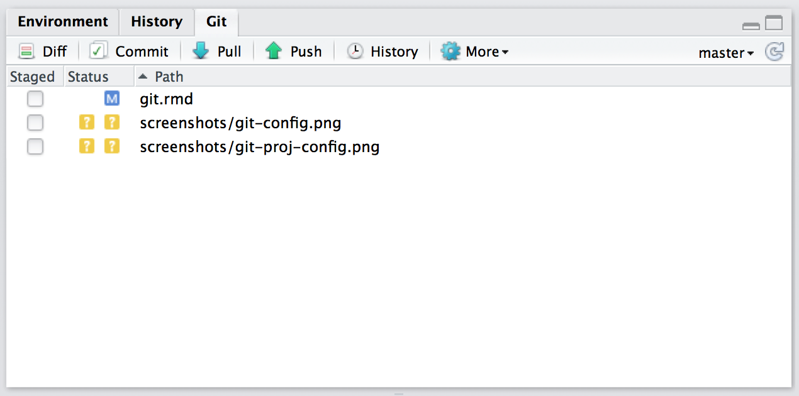 -
The git dropdown menu, found in the toolbar, includes Git and GitHub commands that apply to the current file:

18.4 See what’s changed
The first benefit of Git is that you can easily see the changes you’ve made. I find this really helpful, as I often accidentally mistype keyboard shortcuts, leaving stray characters in my code. The RStudio Git pane lists every file that’s been added, modified or deleted. The icon describes the change:
, Modified. You’ve changed the contents of the file.
, Untracked. You’ve added a new file that Git hasn’t seen before.
, Deleted. You’ve deleted a file.
You can get more details about modifications with a “diff”, 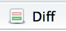. This opens a new window showing the detailed differences:
The background colours tells you whether the text has been added (green) or removed (red). (If you’re colourblind you can use the line numbers in the two columns at the far left as a guide: a number in the first column identifies the old version, a number in second column identifies the new version.) The grey lines of code above and below the changes give you additional context.
In the shell, use git status to see an overview of changes and git diff to show detailed differences.
18.5 Record changes
The fundamental unit of work in Git is a commit. A commit takes a snapshot of your code at a specified point in time. Using a Git commit is like using anchors and other protection when climbing. If you’re crossing a dangerous rock face you want to make sure you’ve used protection to catch you if you fall. Commits play a similar role: if you make a mistake, you can’t fall past the previous commit. Coding without commits is like free-climbing: you can travel much faster in the short-term, but in the long-term the chances of catastrophic failure are high! Like rock climbing protection, you want to be judicious in your use of commits. Committing too frequently will slow your progress; use more commits when you’re in uncertain or dangerous territory. Commits are also helpful to others, because they show your journey, not just the destination.
There are five key components to every commit:
A unique identifier, called a SHA (short for secure hash algorithm).
A changeset that describes which files were added, modified and deleted.
A human-readable commit message.
A parent, the commit that came before this one. (There are two exceptions to this rule: the initial commit doesn’t have a parent, and merges, which you’ll learn about later, have two parents.)
An author.
You create a commit in two stages:
You stage files, telling Git which changes should be included in the next commit.
You commit the staged files, describing the changes with a message.

The commit window is made up of three panes:
The top-left pane shows the current status in the way as the Git pane in the main RStudio window.
The bottom pane shows the diff of the currently selected file.
The top-right pane is where you’ll enter the commit message, a human readable message summarising the changes made in the commit. More on that shortly.
To create a new commit:
Save your changes.
Open the commit window by clicking or pressing
Ctrl + Alt + m.-
Select files. To stage (select) a single file for inclusion, tick its check box. To stage all files, press Ctrl/Cmd + A, then click
 .
.As you stage each file, you’ll notice that its status changes. The icon will change columns from right (unstaged status) to left (staged status), and you might see one of two new icons:
- Added:
 :
after staging an untracked file, Git now knows that you want to add it
to the repo.
:
after staging an untracked file, Git now knows that you want to add it
to the repo. - Renamed:
 :
If you rename a file, Git initially sees it as a deletion and addition.
Once you stage both changes, Git will recognise that it’s a rename.
:
If you rename a file, Git initially sees it as a deletion and addition.
Once you stage both changes, Git will recognise that it’s a rename.
Sometimes you’ll see a status in both columns, e.g. . This means that you have both staged and unstaged changes in the same file. This happens when you’ve made some changes, staged them, and then made some more. Clicking the staged checkbox will stage your new changes, clicking it again will unstage both sets of changes. Stage files, as above.
Write a commit message (top-right panel) which describes the changes that you’ve made. The first line of a commit message is called the subject line and should be brief (50 characters or less). For complicated commits, you can follow it with a blank line and then a paragraph or bulleted list providing more detail. Write messages in imperative, like you’re telling someone what to do: “fix this bug”, not “fixed this bug” or “this bug was fixed”.
Click Commit.
Staging files is a little more complicated in the shell. You use git add to stage new and modified files, and git rm to stage deleted files. To create the commit, use git commit -m <message>.
18.6 Commit best practices
Ideally, each commit should be minimal but complete:
Minimal: A commit should only contain changes related to a single problem. This will make it easier to understand the commit at a glance, and to describe it with a simple message. If you should discover a new problem, you should do a separate commit.
Complete: A commit should solve the problem that it claims to solve. If you think you’ve fixed a bug, the commit should contain a unit test that confirms you’re right.
Each commit message should:
Be concise, yet evocative. At a glance, you should be able to see what a commit does. But there should be enough detail so you can remember (and understand) what was done.
Describe the why, not the what. Since you can always retrieve the diff associated with a commit, the message doesn’t need to say exactly what changed. Instead it should provide a high-level summary that focuses on the reasons for the change.
If you do this:
It’ll be easier to work with others. For example, if two people have changed the same file in the same place, it’ll be easier to resolve conflicts if the commits are small and it’s clear why each change was made.
Project newcomers can more easily understand the history by reading the commit logs.
You can load and run your package at any point along its development history. This can be tremendously useful with tools like bisectr, which allow you to use binary search to quickly find the commit that introduced a bug.
If you can figure out exactly when a bug was introduced, you can easily understand what you were doing (and why!).
You might think that because no one else will ever look at your repo, that writing good commit messages is not worth the effort. But keep in mind that you have one very important collaborator: future-you! If you spend a little time now polishing your commit messages, future-you will thank you if and when they need to do a post-mortem on a bug.
Remember that these directives are aspirational. You shouldn’t let them get in your way. If you look at the commit history of my repositories, you’ll notice a lot of them aren’t that good, especially when I start to get frustrated that I still haven’t managed to fix a bug. Strive to follow these guidelines, and remember it’s better to have multiple bad commits than to have one perfect commit.
18.7 Ignoring files
Often, there are files that you don’t want to include in the repository. They might be transient (like LaTeX or C build artefacts), very large, or generated on demand. Rather than carefully not staging them each time, you should instead add them to .gitignore. This will prevent them from accidentally being added. The easiest way to do this is to right-click on the file in the Git pane and select Ignore:
If you want to ignore multiple files, you can use a wildcard “glob” like *.png. To learn more about the options, see ignoring files in Pro-Git.
Some developers never commit derived files, files that can be generated automatically. For an R package this would mean ignoring the files in the NAMESPACE and man/ directories because they’re generated from comments. From a practical pespective, it’s better to commit these files: R packages have no way to generate .Rd files on installation so ignoring derived files means that users who install your package from GitHub will have no documentation.
18.8 Undo a mistake
The best thing about using commits is that you can undo mistakes. RStudio makes it particularly easy:
-
To undo the changes you’ve just made, right click on the file in the Git pane and select “revert”. This will roll any changes back to the previous commit. Beware: you can’t undo this operation!
You can also undo changes to just part of a file in the diff window. Look for a discard chunk button above the block of changes that you want to undo: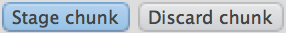. You can also discard changes to individual lines or selected text.
- If you committed changes too early, you can modify the previous commit by staging the extra changes. Before you click commit, select
 .
(Don’t do this if you’ve pushed the previous commit to GitHub - you’re
effectively rewriting history, which should be done with care when you’re
doing it in public.)
.
(Don’t do this if you’ve pushed the previous commit to GitHub - you’re
effectively rewriting history, which should be done with care when you’re
doing it in public.)
If you didn’t catch the mistake right away, you’ll need to look backwards in history and find out where it occurred:
-
Open the history window by clicking 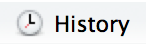 in the Git pane.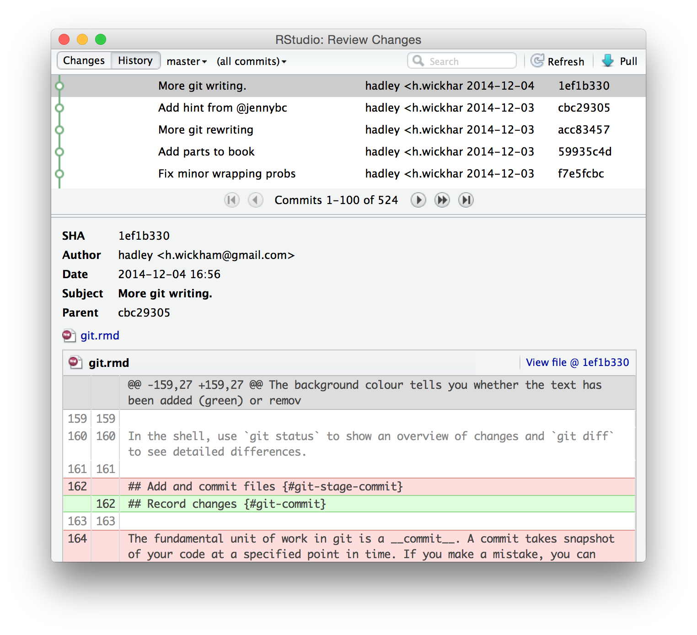
The history window is divided into two parts. The top part lists every commit to your repo. The bottom part shows you the commit: the SHA (the unique id), the author, the date, the parent and the changes in the commit.
Navigate back in time until you find the commit where the mistake occurred. Write down the parent SHA: that’s the commit that occurred before the mistake so it will be good.
Now you can use that SHA in the shell:
-
See what the file looked like in the past so you can copy-and-paste the old code:
-
Or copy the version from the past back in to the present:
In both cases you’ll need to finish by staging and committing the files.
(It’s also possible to use Git as if you went back in time and prevented the mistake from happening in the first place. This is an advanced technique called rebasing history. As you might imagine, going back in time to change the past can have a profound impact on the present. It can be useful, but it needs to be done with extreme care.)
If you’re still stuck, try https://sethrobertson.github.io/GitFixUm/fixup.html or http://justinhileman.info/article/git-pretty/. They give step-by-step approaches to fixing many common (and not so common!) problems.
18.9 Synchronising with GitHub
So far we’ve only been working locally, using commits to track the progress of a project and to provide safe checkpoints. However, Git really shines when you start sharing your code with others with GitHub. While there are other choices, I recommend GitHub because it is free for open source projects, it has all the features you’ll need, and is a popular choice in the R world.
To publish, or push, your code to GitHub:
Create a new repo on GitHub: https://github.com/new. Give it the same name as your package, and include the package title as the repo description. Leave all the other options as is, then click Submit.
-
Open a shell, then follow the instructions on the new repo page. They’ll look something like this:
The first line tells Git that your local repo has a remote version on GitHub, and calls it “origin”. The second line pushes all your current work to that repo.
Now let’s make a commit and verify that the remote repo updates:
-
Modify
DESCRIPTIONto addURLandBugReportsfields that link to your new GitHub site. For example, dplyr has: Save the file and commit (with the message “Updating DESCRIPTION to add links to GitHub site”).
Push your changes to GitHub by clicking 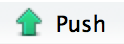. (This is the same as running
git pushin the shell).Go to your GitHub page and look at the
DESCRIPTION.
Usually, each push will include multiple commits. This is because you push much less often than you commit. How often you push versus commit is completely up to you, but pushing code means publishing code. So strive to push code that works.
To ensure your code is clean, I recommend always running R CMD check before you push (a topic you’ll learn about in the chapter on automated checking). If you want to publish code that doesn’t work (yet), I recommend using a branch, as you’ll learn about below in branching.
 . This message indicates that I have 1 commit locally (my branch) that is not on GitHub (“origin/master”).
. This message indicates that I have 1 commit locally (my branch) that is not on GitHub (“origin/master”).18.10 Benefits of using GitHub
You get a decent website. The GitHub page for your project, e.g. https://github.com/hadley/testthat (the GitHub repo for testthat), lists all the files and directories in your package.
.Rfiles will be formatted with syntax highlighting, and.md/.Rmdfiles will be rendered as HTML. And, if you include aREADME.mdfile in the top-level directory, it will be displayed on the homepage. You’ll learn more about the benefits of creating this file in README.md.-
It makes it easy for anyone to install your package (and to benefit from your hard work):
devtools::install_github("<your_username>/<your_package>") You can track the history of the project in the commit view, e.g. https://github.com/hadley/testthat/commits/master. When I’m working on a package with others, I often keep this page open so I can see what they’re working on. Individual commits show the same information that you see in the commit/diff window in RStudio.
-
It’s easy to see the history of a file. If you navigate to a file and click History, you’ll see every commit that affected that file. Another useful view is Blame; it shows the last change made to each line of code, who made the change, and the commit the change belongs to. This is tremendously helpful when you’re tracking down a bug.
You can jump directly to these pages from RStudio with the Git dropdown in the main toolbar:
- You can comment on commits. To comment on the commit as a whole, use the comment box at the bottom of the page. To comment on an individual line, click the plus sign that appears when you mouse over a line number,
 .
This is a great way to let your collaborators know if you see a mistake or
have a question. It’s better than email because it’s public so anyone
working on the repo (both present and future) can see the conversation.
.
This is a great way to let your collaborators know if you see a mistake or
have a question. It’s better than email because it’s public so anyone
working on the repo (both present and future) can see the conversation.
18.11 Working with others
You use push to send your changes to GitHub. If you’re working with others, they also push their changes to GitHub. But, to see their changes locally you’ll need to pull their changes from GitHub. In fact, to make sure everyone is in sync, Git will only let you push to a repo if you’ve retrieved the most recent version with a pull.
When you pull, Git first downloads (fetches) all of the changes and then merges them with the changes that you’ve made. A merge is a commit with two parents. It takes two different lines of development and combines them into a single result. In many cases, Git can do this automatically: for example, when changes are made to different files, or to different parts of the same file. However, if changes are made to the same place in a file, you’ll need to resolve the merge conflict yourself.
In RStudio, you’ll discover that you have merge conflict when:
A pull fails with an error.
- In the Git pane, you see a status like

RStudio currently doesn’t provide any tools to help with merge conflicts, so you’ll need to use the command line. I recommend starting by setting your merge conflict “style” to diff3. The diff3 style shows three things when you get a merge conflict: your local changes, the original file and the remote changes. The default style is diff2, which only shows your changes and the remote changes. This generally makes it harder to figure out what’s happened.
-
If you’ve encountered your first merge conflict, do the following:
-
If you’re not in the middle of a merge conflict, just run
. In each file, you’ll find a conflict marker that looks like this:<<<<<<< HEAD
||||||| merged common ancestors
=======
>>>>>>> remoteThis shows all three versions of the conflicting code:
At the top, your local code.
In the middle, the code from the last commit before the split between the two lines of development (This is missing in the default conflict style, so if you don’t see it, follow the instructions above).
At the bottom, the remote code that you pulled down from GitHub.
You need to work through each conflict and decide either which version is better, or how to combine both versions. Then, before you stage the file, make sure you’ve deleted all the conflict markers. Once you’ve fixed all conflicts, make a new commit and push to GitHub.
A couple of pointers when fixing text generated by roxygen:
Don’t fix problems in
man/*.Rdfiles. Instead, resolve any conflicts in the underlying roxygen comments and re-document the package.Merge conflicts in the
NAMESPACEfile will prevent you from re-loading or re-documenting a package. Resolve them enough so that the package can be loaded, then re-document to generate a clean and correctNAMESPACE.
Handling merge conflicts is one of the trickier parts of Git. You may need to read a few tutorials before you get the hang of it. Google and StackOverflow are great resources. If you get terribly confused, you can always abort the merge and try again by running git merge --abort then git pull.
18.12 Issues
Every GitHub repo comes with a page for tracking issues. Use it! If you encounter a bug while working on another project, jot a note down on the issues page. When you have a smaller project, don’t worry too much about milestones, tags and assigning issues to specific people. Those are more useful once you get over a page of issues (>50). Once you get to that point, read the GitHub guide on issues: https://guides.github.com/features/issues/.
A useful technique is closing issues from a commit message. Just put Closes #<issue number> somewhere in your commit message and GitHub will close the issue for you when you next push. The best thing about closing issues this way is that it makes a link from the issue to the commit. This is useful if you ever have to come back to the bug and want to see exactly what you did to fix it. You can also link to issues without closing them; just refer to #<issue number>.
As you’ll learn about in NEWS.md, it’s a good idea to add a bullet to NEWS.md whenever you close an issue. The bullet point should describe the issue in terms that users will understand, as opposed to the commit message which is written for developers.
18.13 Branches
Sometimes you want to make big changes to your code without having to disturb your main stream of development. Maybe you want to break it up into multiple simple commits so you can easily track what you’re doing. Maybe you’re not sure what you’ve done is the best approach and you want someone else to review your code. Or, maybe you want to try something experimental (you can merge it back only if the experiment succeeds). Branches and pull requests provide powerful tools to handle these situations.
Although you haven’t realised it, you’re already using branches. The default branch is called master; it’s where you’ve been saving your commits. If you synchronise your code to GitHub you’ll also have a branch called origin/master: it’s a local copy of all the commits on GitHub, which gets synchronised when you pull. git pull does two things:
git fetch origin masterto update the localorigin/masterbranch with the latest commits from GitHub.git merge origin/masterto combine the remote changes with your changes.
It’s useful to create your own branches when you want to (temporarily) break away from the main stream of development. You can create a new branch with git checkout -b <branch-name>. Names should be in lower case letters and numbers, with - used to separate words.
Switch between branches with git checkout <branch-name>. For example, to return to the main line of development use git checkout master. You can also use the branch switcher at the top right of the Git pane:

If you’ve forgotten the name of your branch in the shell, you can use git branch to list all existing branches.
After you’ve done that once, you can use the pull and push buttons as usual.
If you’ve been working on a branch for a while, other work might have been going on in the master branch. To integrate that work into your branch, run git merge master. You will need to resolve any merge conflicts (see above). It’s best to do this fairly frequently - the less your branch diverges from the master, the easier it will be to merge.
Once you’re done working on a branch, merge it back into the master, then delete the branch:
(Git won’t let you delete a branch unless you’ve merged it back into the master branch. If you do want to abandon a branch without merging it, you’ll need to force delete with -D instead of -d. If you accidentally delete a branch, don’t panic. It’s usually possible to get it back. See the advice about undoing mistakes).
18.14 Making a pull request
A pull request is a tool for proposing and discussing changes before merging them into a repo. The most common use for a pull request is to contribute to someone else’s code: it’s the easiest way to propose changes to code that you don’t control.
Below, you’ll learn about pull requests to make changes to your own code. This may seem a bit pointless because you don’t need them, as you can directly modify your code. But pull requests are surprisingly useful because they allow you to get feedback on proposed changes. We use them frequently at RStudio to get feedback before merging major changes.
GitHub has some good documentation on using pull requests: https://help.github.com/articles/using-pull-requests/. In this chapter, I’ll focus on the basics you need to know to use pull requests effectively, and show you how they fit in with the Git commands you’ve learned so far.
To create a pull request, you create a branch, commit code, then push the branch to GitHub. When you next go to the GitHub website you’ll see a header that invites you to submit a pull request. You can also do it by:
-
Switching branches:

- Clicking 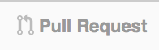
This will create a page that looks like this:

This pull request, which fixes a couple of small problems, is one that was submitted to this book’s GitHub site.
There are three parts to a pull request:
A conversation, 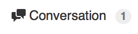, where you can discuss the changes as a whole.
The commits view, 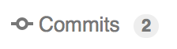, where you can see each individual commit.
The file changes,
 ,
where you see the overall diff of the commits, and you can comment
on individual lines.
,
where you see the overall diff of the commits, and you can comment
on individual lines.
Once you’re done discussing a pull request, you either choose to merge it or delete it. Merging it is equivalent to running git merge <branchname> from the shell; deleting is equivalent to git branch -d <branchname>.
18.15 Submitting a pull request to another repo
To submit a pull request to a repo that you don’t own, you first need to create a copy of the repo that you can own, called a fork, and then clone that fork on your own computer:
Fork the original repo by going to the repo on GitHub and clicking 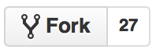. This creates a copy of the repo that belongs to you.
-
Clone the forked repo to create a local copy of the remote repo. It’s possible to do this within RStudio (using “Create New Project” from “Version Control”) but I think it’s easier to do it from the shell:
A fork is a static copy of the repo: once you’ve created it, GitHub does nothing to keep it in sync with the upstream repo. This is a problem because while you’re working on a pull request, changes might occur in the original repo. To keep the forked and the original repo in sync, start by telling your repo about the upstream repo:
Then you can merge changes from the upstream repo to your local copy:
When working on a forked repo, I recommend that you don’t work on the master branch. Because you’re not really working on the main line of development for that repo, using your master branch makes things confusing.
If you always create pull requests in branches, you can make it a little easier to keep your local repo in sync with the upstream repo by running:
Then you can update your local repo with the following code:
Changes may occur while you’re working on the pull request, so remember to merge them into your branch with:
A pull request (PR) is a one-to-one mapping to a branch, so you can also use this technique to make updates based on the pull request discussion. Don’t create a new pull request each time you make a change; instead you just need to push the branch that the PR is based on and the PR webpage will automatically update.
The diagram below illustrates the main steps of creating a pull request and updating the request as the upstream repo changes:

18.16 Reviewing and accepting pull requests
As your package gets more popular, you’re likely to receive pull requests. Receiving a pull request is fantastic. Someone not only cares about your package enough to use it, they’ve actually read the source code and made an improvement!
When you receive a pull request, I recommend reviewing it using the three step approach described by Sarah Sharp. I summarise the three phases below, but I highly recommend reading the full article at https://sarah.thesharps.us/2014/09/01/the-gentle-art-of-patch-review/:
Is it a good idea? If you don’t think the contribution is a good fit for your project, it’s polite to let the contributor know as quickly as possible. Thank them for their work, and refocus them on a better area to work on.
Is the overall approach sound? At this point you want to focus on the big picture: have they modified the right functions in the right way? Avoid nitpicking minor style problems (that’s the final phase); instead just provide a pointer to your style preferences, e.g. the tidyverse style guide at https://style.tidyverse.org/.
-
Is it polished? In the final review phase, make sure that the non-code parts of the PR are polished. Prompt the contributor to update the documentation, point out spelling mistakes and suggest better wording.
I recommend asking the contributor to include a bullet point in
NEWS.md, briefly describing the improvement and thanking themselves with their GitHub username. More details to follow in post release).
After discussion is complete, you can incorporate the changes by clicking the merge button. If the button doesn’t work, GitHub provides some instructions on how to do it from the command line. While you’ve seen all the pieces before, it’s useful to read through this just so you understand what exactly is happening.
# Create a new branch, and sync it with the pull request
git checkout -b <branch> master
git pull https://github.com/<user>/<branch>.git patch-3
# Merge the changes into the main line of development
git checkout master
git merge --no-ff <branch>
# Resolve conflicts, stage and add.
# Sync your local changes with GitHub
git push origin master18.17 Learning more
Git and GitHub are a rich and powerful set of tools, and there’s no way this chapter has taught you everything you need to know. However, you should now have the basic knowledge to be effective, and you should be in a good position to learn more. Some good resources are:
GitHub help, https://help.github.com, not only teaches you about GitHub, but also has good tutorials on many Git features.
If you’d like to learn more about the details of Git, read Pro Git by Scott Chacon and Ben Straub.
Finally, StackOverflow is a vital part of Git - when you have a problem that you don’t know how to solve, StackOverflow should be your first resource. It’s highly likely that someone has already had the same exact problem as you, and that there will be a variety of approaches and solutions to choose from.